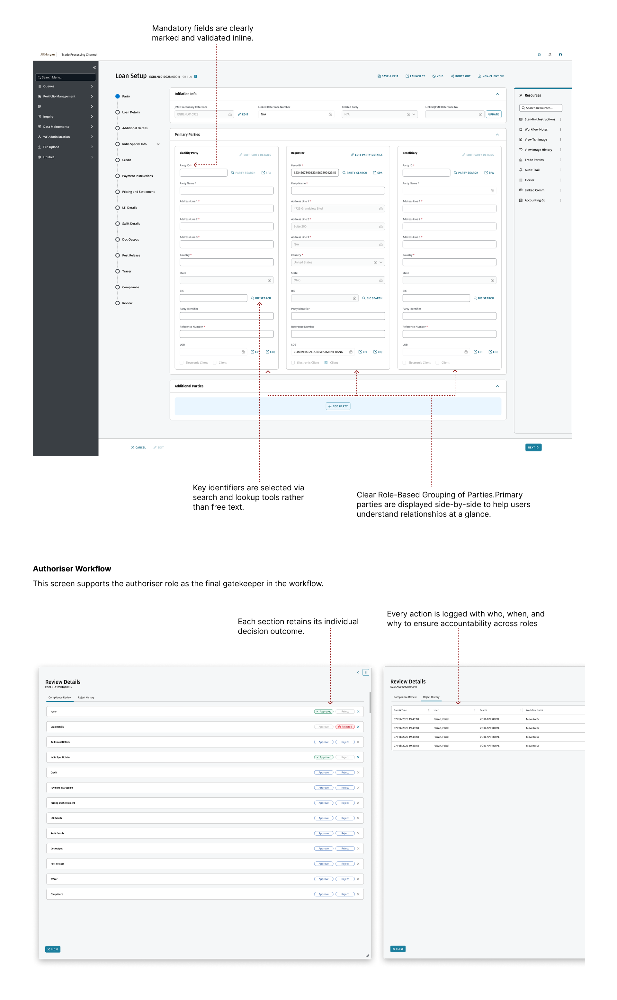
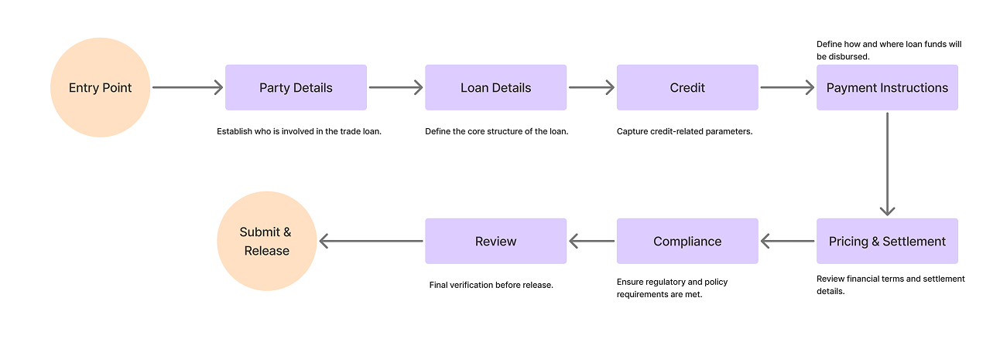
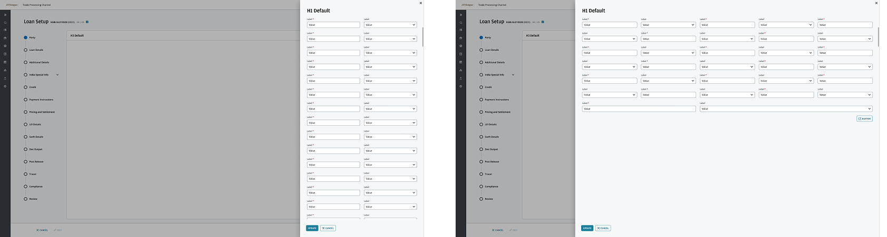
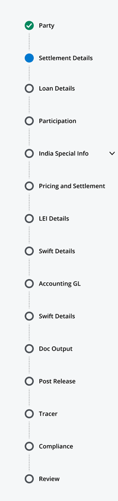
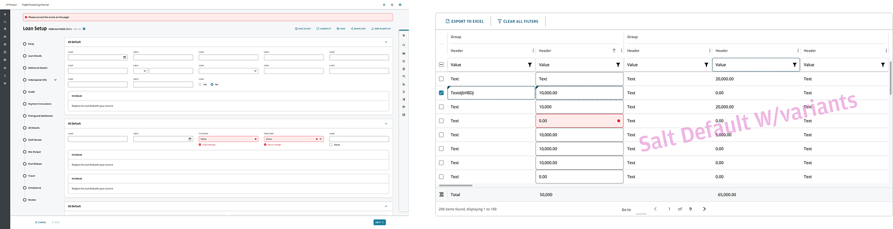
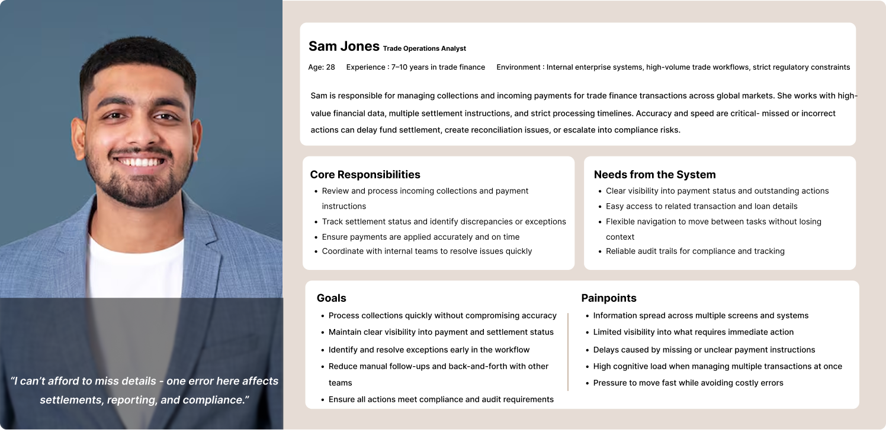
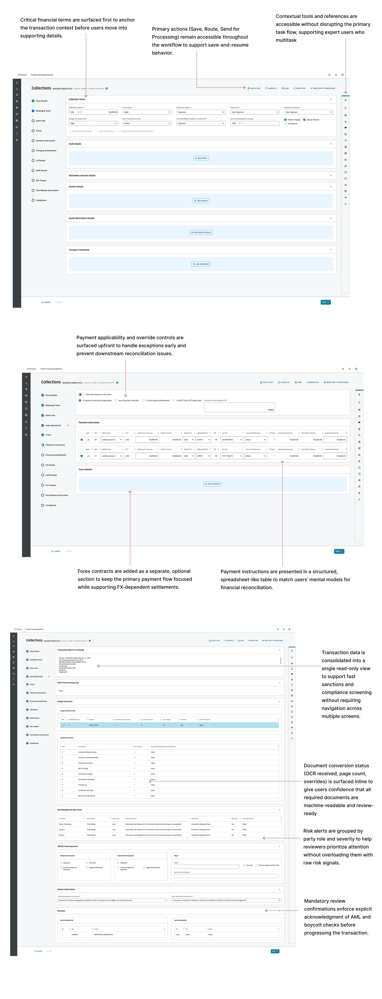

NDA Project
Private Content
This case study is protected under NDA.
Enter passcode to continue.
Incorrect password. Please try again or email sayali.ux@gmail.com for access.
Need access? Email me at sayali.ux@gmail.com
Return to Home
Case Study
NDA ProjectJP Morgan Chase
Trade Processing Channel · Loan Setup & Collections
NDA project. Screens shown are partial and curated. Counterparty data, transaction amounts, and certain workflow details have been anonymized. All domain terminology, design decisions, and interaction patterns described are accurate to the engagement.
Overview
Two workflows. One global trade operation.
Trade finance is one of the highest-stakes operational surfaces in any global bank. A bad value date, a missed sanctions hit, a misrouted SWIFT MT103, and the bank settles to the wrong counterparty in the wrong currency on the wrong day. Operations analysts run those workflows under regulator-set deadlines and four-eyes approval rules.
JPMC brought us in to redesign two of them: Loan Setup (originate a trade finance loan) and Collections (apply incoming payments against existing loans). Both live under the same regulatory frame. Both fail in different ways.
"Don't let me submit a loan with a missing field. I cannot find it three days later."
"Don't lose my work when a counterparty calls and I have to step away."
"When the auditor asks what happened on this trade, I need the full who-when-why."
Every interaction-level decision in this project laddered back to one of those three.
What We Were Aiming For
Enforce compliance-critical sequencing
Without making senior analysts feel locked in. Forward gated, backward always open.
Catch errors at field exit, not at submit
Inline validation at every feasible point. The cost of late discovery is the central failure mode in enterprise data entry.
Build a section-level audit trail
One every authoriser and regulator can read at a glance. Who, when, and why on every action.
Match the reconciliation mental model
The spreadsheet model analysts already use. Extend the JPMC design system rather than fork it.
Part 01 of 02 · Loan Setup
Loan Setup: the system that has to say no.
Loan Setup is where a trade finance facility gets booked. Counterparty details, facility terms, credit information, payment instructions, regulatory data, all entered before the loan releases into downstream settlement. The workflow is deeply sequential. Each stage depends on the one before it. The hard part is not the sequencing. The hard part is the senior analyst who needs to revise stage two after they've finished stage seven, and the compliance officer who cannot let the user skip stage two on the way to stage seven.
Context
Nine stages. Entry Point. Party Details. Loan Details. Credit. Payment Instructions. Pricing & Settlement. Compliance. Review. Submit & Release.
Forward sequencing has to be locked because compliance teams must prove the user could not skip a check. Backward navigation has to stay open because senior analysts revise upstream stages constantly when new counterparty data lands mid-loan.
We wrote one rule that ended the longest argument in the engagement.
The Rule
Forward navigation is gated. Backward navigation is always open and triggers downstream re-validation.
If Rachel goes back to Party Details and changes the counterparty's country of incorporation, every downstream stage that depends on country code (sanctions screening, withholding tax, pricing) flags as needing re-review. She does not lose her work. She loses only the certifications grounded in the value she just changed.
Three pressure points we kept hearing about
Errors discovered late.
A missing LEI at submit costs ninety minutes of upstream rework. Inline validation fixes this.
No progress visibility.
Analysts could not tell where they were in a long workflow. The stepper fixes this.
Dense terminology under time pressure.
Especially for analysts in their first two years. Field grouping, contextual hints, and consistent layouts fix this.
The job was not to simplify the work. The complexity is real and load-bearing. The job was to make complex steps predictable and error-resistant while keeping the depth the work requires.
Meet Rachel

Rachel Thomson, 28. Trade Operations Analyst. 7–10 years in trade finance. Lives in the Loan Setup workflow.
Rachel is fast, accurate, and skeptical of new tools. She uses the new system if it makes her faster than the legacy one. She abandons it the first time it loses her work.
"These workflows are complex. I rely on the system to guide me through every required step."
The workflow

Nine-stage Loan Setup. Forward gated, backward open, every stage carries its own validation state and section-level autosave.
Four design decisions worth fighting for
Stepper enforcement, with backward escape hatches.
Compliance said forward sequencing must be locked. Senior analysts said locking it backward would make the system unusable. The compromise: lock forward, leave backward fully open, treat backward edits as downstream re-validation triggers. Every dependent section gets a "needs re-review" treatment. The user always sees the cost of going back.
Section-level autosave, not field-level.
Trade ops analysts don't finish a loan in one sitting. A counterparty calls. An FX desk pings. A sanctions check stalls. Drafts are a real object: their own dashboard surface, their own progress percentage, their own owner. Autosave commits at the section boundary, not on every keystroke. Field-level autosave produces too much noise in the audit log and makes the system look uncertain. Section commits feel like saving a chapter.
Inline validation, not submit-time validation.
Format checks fire on field exit. Dependency checks fire when the dependent field gets filled. Business rule validation fires on stage transition. Sanctions screening runs against OFAC, EU, and UN consolidated lists at counterparty save, not at final submit. The cost of late discovery is the central failure mode in enterprise data entry. Catch errors as early as the data layer allows.
Drawers for context, not modals.
Trade finance involves constant cross-referencing. Looking up a counterparty hierarchy, a SWIFT BIC, a prior tranche on the same facility. We used right-side drawer overlays for every contextual lookup. Primary task position is preserved behind the drawer. Modals interrupt. Drawers extend.
Foundational screens

Core layout, grid, and component patterns reused across every Loan Setup stage. Designed for dual-monitor desktops, sized 748px to 1838px because that's what fits next to a SWIFT terminal.

Drawer pattern. Used for counterparty lookups, regulation references, prior-version comparisons. Primary task stays in place.
The JPMC design system already shipped buttons, inputs, type tokens, and color. What it didn't have was an enterprise-workflow vocabulary. Our work extended it with the patterns trade ops needed: gated stepper, section-level autosave indicator, dependency-flag treatment, audit-log row, role-gated approval card. Every pattern shipped back to the system library so the next JPMC product team inherits it.
The stepper, up close
Each circle in the stepper is a validation gate. A completed stage turns green. The active stage is highlighted blue. Everything downstream stays grey until the user earns it by completing what came before.
This isn't arbitrary. Compliance teams must prove the user could not skip a required check. The stepper makes that provable. The audit log records every stage transition with a timestamp and user ID, so the trail exists whether or not anyone asks for it.
Backward navigation stays open at every stage. If Rachel needs to revise Party Details after reaching Compliance, she clicks back. The system flags every downstream stage that depends on what she changed and marks them for re-review. She doesn't lose her work. She just loses the certifications that were grounded in the value she just changed.
Identifiers — LEI, BIC, internal counterparty IDs — are entered via search and lookup, never free text. One typo in a counterparty identifier can route a payment to the wrong entity. Constrained input removes that category of error entirely.

All stages. Each circle is a validation gate. Green = complete, blue = active, grey = locked.
Validation & error prevention

Mandatory fields visually distinct. Inline validation at field exit. Stage transition blocked when any required field is empty or fails business rule validation.
Annotated mockups · Loan Setup
Field grouping, validation states, progress indicators, dependency flags. Dense by design, structured so the density doesn't punish the user.
The authoriser experience
After Rachel completes the loan, an authoriser reviews and either approves, rejects, or returns it for revision. This is the four-eyes surface, the maker-checker-authoriser pattern that runs across regulated banking. The screen had to feel like clarity, not bureaucracy.
Section-level decisions, not document-level.
An authoriser can approve four sections, return one for revision, and the loan moves into a partial-approval state. The maker fixes only the returned section instead of the entire loan.
Every action logged with who, when, and why.
The "why" is structured: typed reason codes plus optional free-text. Audit logs are queryable, not just readable, because regulators query them.
Read-only by default.
Authorisers cannot accidentally edit the loan they're reviewing. Editing requires an explicit "return for revision" routing action.
Part 02 of 02 · Collections
Collections: the workflow that won't slow down.
Collections is execution under pressure. Where Loan Setup is creation under structure, Collections is reconciliation under speed. Funds arrive from correspondent banks, sometimes in tranches, sometimes against the wrong loan, sometimes mid-FX-settlement. The user has to capture, validate, apply forex, match against the correct trade record, clear sanctions, and release, all before the settlement window closes. Same regulatory pressure. Different cognitive shape.
Meet Sam

Sam Jones, Senior Collections Operations Analyst. SWIFT, FX, payment reconciliation.
Sam is faster than Rachel. He's been doing this longer. He moves between sections constantly, runs FX lookups in parallel with payment validation, and will not tolerate stepping through every prior section to make a single edit later.
"Collections move fast. I need the system to keep up without making me search for what I need."
The flow

Identification → Payment Detail Review → Action and Adjustment → Compliance Screening → Release. Non-linear in practice, structured in the UI.
Two design decisions that defined Collections
Spreadsheet-like payment table.
The biggest move on this side of the project. Reconciliation analysts live in Excel half their day. A traditional form pattern (one field per row, label on the left) does not match how they think. We built payment instructions as a structured table: rows per payment, columns for amount, currency, value date, beneficiary, reference, BIC. Inline editing, keyboard navigation, copy-paste support, partial-payment handling. The first proto with three SMEs returned the same response: "this is how I already work."
FX as a separate optional surface.
Not every payment involves forex. Loading FX into the primary table makes the common case heavier than it needs to be. We split FX contracts into their own section, accessible from the payment row, only relevant when a settlement requires currency conversion. Spot vs. forward, contract reference, rate at settlement. Primary flow stays focused. FX stays one click away when needed.
Annotated mockups · Collections

Critical financial terms anchored at the top of the screen so the user has transaction context before touching a field. Spreadsheet-like payment table. Save, Route, and Send for Processing accessible throughout for save-and-resume across sessions. FX and extended details surface in a separate section. Compliance screening folds into the same review surface: document completeness (OCR page-count), risk alerts scoped to party and role, mandatory acknowledgment of sanctions and AML checks before release.
The legacy compliance screen was a final gate that felt punitive. The user did the work, hit submit, hit a wall of checks. We rebuilt it as an integrated review surface. Document completeness shows during the workflow, not at the end. Risk alerts surface at the section that triggered them. The mandatory AML acknowledgment is a structured action, not a checkbox at the bottom. Same checks. Different placement. Compliance feels supportive instead of punitive.
Patterns
The patterns we kept reaching for.
A short list. Most of them are about lowering the cost of a mistake.
Process
How four designers worked on everything in parallel.
Four UX designers, all working across both workflows. We split screens by surface area within each week, ran shared critique twice a week, and extended the JPMC design system collaboratively so consistency lived at the component level. Stakeholder reviews ran weekly. JPMC product and SMEs joined every other critique. Engineering joined feasibility reviews at phase close.
The "all of us on everything" model is rare in enterprise design and worth defending. It produces systemic consistency, faster decisions on cross-workflow patterns, and a team that can swap context without losing momentum.
Conclusion
Two workflows. One framework for designing under regulatory pressure.
Loan Setup taught us how to design a system that has to say no in the right places. Collections taught us how to design a system that has to keep up with users who are faster than it. Both surfaces ship inside an extended JPMC design system the next product team inherits.
Gated-forward, open-backward stepper. Section-level autosave with draft persistence. Inline validation against sanctions, business rules, and field dependencies. Maker-checker-authoriser surface with section-level decisions and structured audit logs.
Spreadsheet-like payment table that matches the reconciliation mental model. FX split to keep the common case light. Compliance integrated into the workflow, not bolted on at the end. Save-and-resume across sessions because real ops teams don't finish in one sitting.
"In regulated workflows, the design job is to give the user a system that knows the difference between a structure they need and a wall they don't."
What's next: Roll the gated-forward / open-backward pattern into adjacent JPMC operations workflows that share the same compliance shape. Instrument validation-failure rates per stage to find where users still trip on dependency errors. Extend the spreadsheet-table reconciliation pattern into adjacent collections-style flows. Keep contributing patterns back to the design system.
Designed at JPMorgan Chase as part of a four-person UX team working in parallel across Loan Setup and Collections. Built on top of the existing JPMC design system, extended with the workflow patterns trade operations needed. Cross-functional with JPMC product, BAs, SMEs, and engineering. NDA project; screens and data shown are partial, curated, and anonymized.